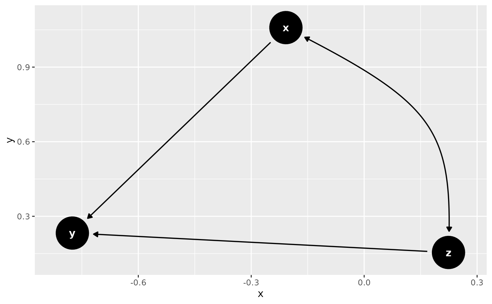
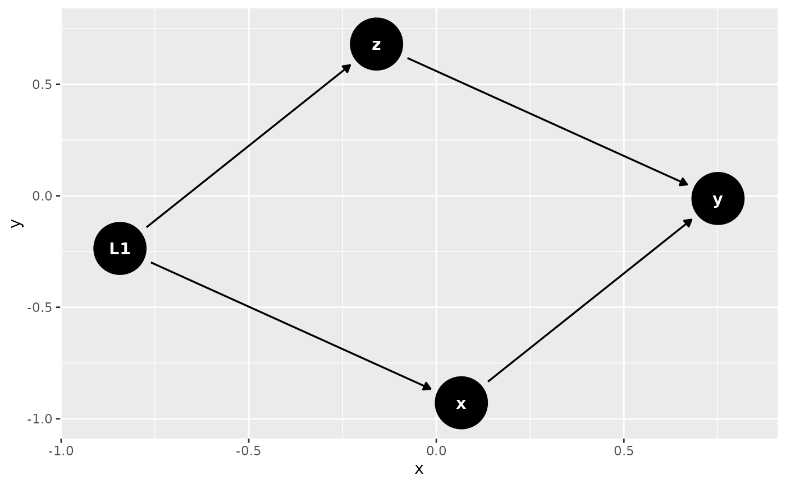

Takes an input graph with bidirected edges and replaces every bidirected edge
x <-> y with a substructure x <- L -> y, where L is a latent variable. See
dagitty::canonicalize() for details. Undirected edges
are not currently supported in ggdag.
Usage
node_canonical(.dag, ...)
ggdag_canonical(
.tdy_dag,
...,
edge_type = "link_arc",
node_size = 16,
text_size = 3.88,
label_size = text_size,
text_col = "white",
label_col = text_col,
node = TRUE,
stylized = FALSE,
text = TRUE,
use_labels = NULL
)Arguments
- .dag, .tdy_dag
input graph, an object of class
tidy_dagittyordagitty- ...
additional arguments passed to
tidy_dagitty()- edge_type
a character vector, the edge geom to use. One of: "link_arc", which accounts for directed and bidirected edges, "link", "arc", or "diagonal"
- node_size
size of DAG node
- text_size
size of DAG text
- label_size
size of label text
- text_col
color of DAG text
- label_col
color of label text
- node
logical. Should nodes be included in the DAG?
- stylized
logical. Should DAG nodes be stylized? If so, use
geom_dag_nodesand if not usegeom_dag_point- text
logical. Should text be included in the DAG?
- use_labels
a string. Variable to use for
geom_dag_label_repel(). Default isNULL.
Examples
dag <- dagify(y ~ x + z, x ~ ~z)
ggdag(dag)

node_canonical(dag)
#> # A DAG with 4 nodes and 4 edges
#> #
#> # Latent Variable: L1
#> #
#> # A tibble: 5 × 8
#> name x y direction to xend yend circular
#> <chr> <dbl> <dbl> <fct> <chr> <dbl> <dbl> <lgl>
#> 1 L1 -2.73 1.89 -> x -1.84 1.17 FALSE
#> 2 L1 -2.73 1.89 -> z -2.00 2.78 FALSE
#> 3 x -1.84 1.17 -> y -1.12 2.05 FALSE
#> 4 y -1.12 2.05 NA NA NA NA FALSE
#> 5 z -2.00 2.78 -> y -1.12 2.05 FALSE
ggdag_canonical(dag)
